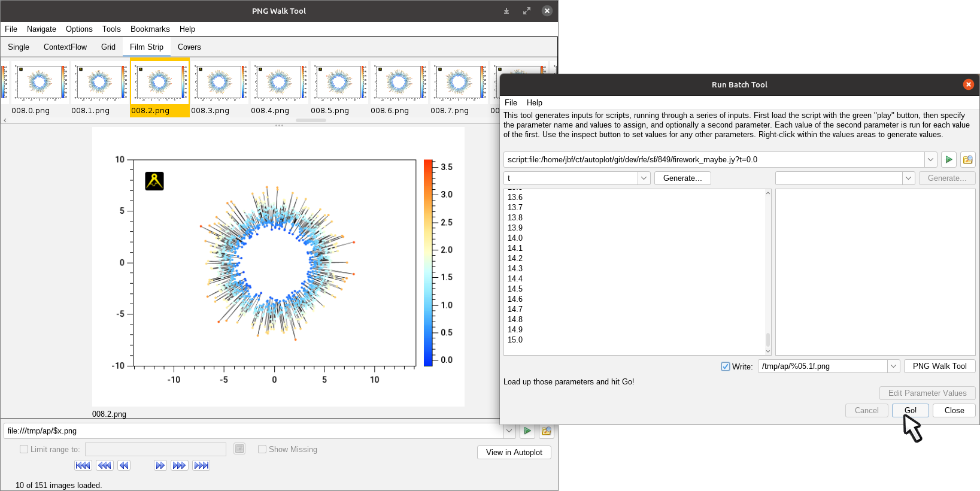

Autoplot Application (#{tag})


Autoplot can be made to lay out the plots precisely. See the script.
Autoplot attempts to allow plotting of data from many data sources, including remote CDF files and OpenDAP servers.
Datasets are identified with URIs, and by the URI's extension, data are loaded into the internal data model. Data are then
displayed by guessing the rendering method and axis ranges to provide a reasonable, useful view of the data. Data can then
be additionally processed with other operations like smooth and FFT, and Jython scripting provides a capable programming environment.
This is the Autoplot2017a branch. This is an update to the production version containing bugfixes and minor new features.
Java 7 is now required. Java 8 will be required sometime soon.
Single-jar version, autoplot.jar, can be run without network access and from the command line.
Mac DMG Release is available.
Bugfixes (2017-10-20 r21556):
- Positive time zone offsets (+0600) where not parsed properly.
- Huge scatter mode has branch which was dropping the last record of a rank 2 waveform.
- 1911: respect options.autorange=False. New autoranging code would always autorange.
- 1910: make sure that the script plot command sets the immutable flag so that plot operates as expected and copying the data can be avoided. Thanks, Masafumi!
- George pointed out where rank 3 waveform data would drop records.
- column keyword was ignored when the first two columns were times.
- ASCII files starting with two time columns could only be read as events, so column keyword didn't work.
- UriTcaSource tweaked to provide useful method for sampling data from URI.
- correction to TimeParser.normalizeTimes, which would improperly round resulting in .699999. Thanks, Masafumi!
- DataPointRecorder had a time resolution limit that prevented use with waveform data. Thanks, Sadie!
- 1793: automatically switch to semicolon, allow long headers. Thanks Chris!
- 1902: improvements to pngwalk tool's write to html.
- 1905: ascii table data source depend1Values were dropped. Thanks, Victor!
- deselecting "bundle" on the ascii editor would not remove bundle keyword from URI.
- 1897: tests needed for autoRangeHints.
- 1899: add and subtract operators to allow sloppiness with units.
- add a couple of completions for timerange and plots[0].yaxis.range to vap file completions after the question mark (?).
- support colorLoadOrder.vap?plots[0].yaxis.range='0+to+4'
- 1895: when rendererControl and color properties are inconsistent, let specific property override.
Older Bugfixes:
- vap+inline completions didn't import things properly, causing runtime error.
- CDF and HDF editor panels didn't preserve the vap+cdf or vap+hdf prefix, breaking servers which send data in files without extensions.
- fft function would assume that the cadence reported by the dataset was correct and precise, use code that looks at the timetags.
- correct completions for "plot([1,2,3],title='t',<C>)" (tab at <C>)
- if vap+jyds:/path/to/data/file.txt?script=/path/to/script.jyds was used, the data file would show in the recently used scripts list.
- correct Pngwalk tool's flickering "..." icon which is too quick to indicate busy for trivial tasks.
- TimeRangeTool pops up over center of GUI, not the address bar.
- 1884: "run batch" corrections.
Features:
- print to PDF now has pixels per inch and (finally) overall width controls.
- rfe601: new scale property allows axis scales to be bound.
- tweaks to property editor so it can be used to show the DOM with updates.
- toDegrees and toRadians now set the units.
- DatumRangeUtil's time range parser properly throws parse exception with "0 to 4" (or any year<1000.)
- PNGWalk save as has checkbox to reduce the image by 60%, to save time in releases.
- "Run Batch" allows times to be loaded from events file.
Less recent features:
- AutoplotServer has --nomessages which turns off message bubbles.
- ServletInfo reports memory consumed and other useful information.
- ServletInfo of Autoplot Servlet now checks whitelist before showing server-side information.
- three new plot symbols added (trianglesWest, trianglesEast, trianglesSouth).
- X11 color names like "DarkRed" can be used.
- .vap format supports transparent colors now.
- symbol size and line thickness spinners allow up to 20 pixels.
- add "bounds" render type, which fills in the region between min and max channels.
- rfe521: aggregate rank 3 images by adding an index and joining them together.
- add http://.../hapi/info trigger for future support of SPASE accessURLs.
- string representation of complex data used (1.23+4.56j)
- add complexConj and complexMultiply functions.
- loosen check for CDF VAR_TYPE to support ESA.
Known issues:
- see Source Forge
- Bugs often have a four-digit ID and can be reviewed with https://sourceforge.net/p/autoplot/bugs/<ID>/.
- Features typically have a three-digit ID and can be reviewed with https://sourceforge.net/p/autoplot/feature-requests/<ID>/.
This completes the feature set for the new production branch. No major features will be added before branching this version.
A production branch will be started in a couple of weeks, and the "Start Autoplot" link at the top of
autoplot.org will run this version.
Feedback on the function and quality of this release is greatly appreciated!
Data is input from:
- ASCII files (.dat,.txt)
- CSV files (.csv)
- Binary files (.bin)
- CDF files(.cdf)
- Excel spread sheets (.xls)
- das2Streams (.d2s or .das2Stream)
- ViRBO's TSDS server
- CDAWeb data server (vap+cdaweb:)
- das2servers (vap+das2server:)
- QStreams (.qds), QDataSet on a das2Stream
- Plasma Wave Group das2 Server
- NetCDF files (.nc,.ncml)
- HDF5 files (.h5,.hdf5)
- DODs servers (.dds)
- Cluster Exchange Format files (.cef)
- Fits Format Files
- Images (.jpg, .png, .gif)
- Wav audio files (.wav)
This is not complete, and limitations include:
- Quantities of rank 3 dimensionality (e.g. flux(Time,Energy,pitch) are plotted by slicing.
- Quantities of rank 4 dimensionality (e.g. flux(Time,Energy,azimuth,sector) are plotted by slicing twice.
autoplot.org is the wiki website, and contains
more information than this launch page.